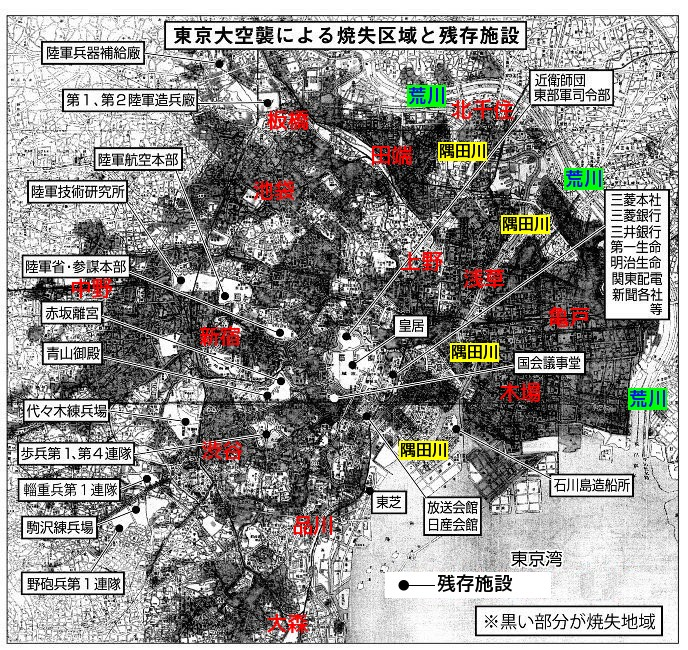

あれから55年も過ぎて記憶もうすれ話が前後する時もありますが、覚えている事だけでも記しておきたいと思います。
昭和17年頃には敵国の来る事を予想して防空防火演習が盛んであった。 燈火管制がしかれ夜は何日も暗かった。 暗くした燈りの下で殆ど何も出来なかった。
訓練の時も「空襲警報」が出ても家の中から少し燈りが漏れていたりし、飛行機の訓練を見ていても仮想敵機に高射砲はなかなか命中せず、「雨が降っても飛行機はとぶか」など、完全に燈りは消しても川が光っているから町の様子はすぐ判るとか、そんな話の出ている時は、すでに敵国では天候に左右されるところではなく、どんな時でも正確に爆弾を落とす事が出来ていたのだ。
燈火管制下のある夜、戦地へ出向いた彼に私は手紙を書いていた。 手元だけの薄暗い灯の下でペンを走らせる。 これを全部書かぬ間に、空襲があればそれまでと思いながら書いていた。 幸いに書き終えて翌朝ポストへ。 前の手紙の返事がーヶ月かかって来たので内地から半月かかる所にいる事は判かるが、軍事郵便だから何処か不明だ。
夜も警報のたびに隣組の人々の声が聞こえる。 クツをはいたまま頭巾をかぶれば良いだけの姿で夜も横になっているだけだ。 昼の訓練の時、私は心にかかってならなかった事がある。 一間ほどの竹の先に縄でハタキの房の様につけた物をぬらして火をたたく火ばたき。 ハシゴを屋根に立てかけ途中に足をかけて下からのバケツリレーを待つ人。 下では防火水槽からバケツでその人まで何人もで次々と水をリレーする。 そのバケツの水で屋根に落ちた焼夷弾が消せるのかしら…と。 全員が真剣なだけになおそう思った。
ラジオでもB29の爆音を聞かせて「この音をよく覚えて味方と区別せよ」と何回も聞いた。 でも実際の時は警報の出た時は、もうB29は本土の空にいた。
何でも統制がきつくなり、衣料も切符で余分な物は買えない。 結婚とか妊婦さんの証明があれば余分に百点が貰えた。 着物は駄目でもんぺと上着に作り直したし、スカートも駄目。 ズボンをはいた。
パーマは電髪と言い、かける人もいなくなった。 そして街角などに千人針を持った人が多く立つ様になる。 千人針とは晒(サラシ)を一メートルほどに切って半巾に折り筆の頭で〇の様に赤インクで千個印をつけ木綿の赤糸を二重にしたもので結び玉を一個ずつ縫いつける。 そして普通は一人一針だが寅年の人は年の数だけ縫うことが出来る。 寅は敵を食い殺すからと言う事で。
五銭玉を縫いつけておくと「死線(四銭))をこえると言われて、縫いつけた物もあった。 私も慰問袋に入れて戦地へ送ったら、私のを貰った兵士から返事が来て、その後内地へ帰って来られた時、川口まで逢いに行った事があった。 とても喜んで貰って嬉しかった。
当時私は28才。 東京蔵前で商売をしていた長兄の身の廻りの世話をしていた。 千葉の九十九里の松林の中に別荘を借りて、母と兄嫁と五人の子供達は疎開していた。 その時分の東京での配給不足を補う為、兄は一週間に一回程千葉に通った。 そして煮干、海苔、小魚など野菜と共に運んでくれていたが、途中で検査に逢い没収された事もありました。
兄嫁の話に依ればそれでも敵上陸に備えて竹槍で応戦の練習があったそうです。 私の弟は早稲田に行っていましたが学徒出陣で千葉の習志野部隊に入り、何日かして面会に行った。 しばらくして出てきた弟の顔が異様にはれていて、「どうした」と聞くと「姉ちゃん、お袋に言うなよ心配するから」と話し出した。 班に分かれていて一人誰か不都合があると全員並んで罰せられ、その時は皮スリッパで往復ビンタを喰らったとか。 同じ時に入った学生はまじめな人だったけど何日でもゲートル巻きの時にとてもおそくて、その度に営庭を何周と走り廻されていたが、ある時、姿が見えなくなり皆で大探しした時、丁度弟がもしやと思いながら開けたトイレの中で皮ベルトで首を吊って死んでいたと聞いた。 その人の身内の人はどの様な気持ちであったかと思い、私はとてもつらい気持になり残念だった。
「空襲」と警報と同時に空が真っ黒になるほどの低空で沢山のB29は私の頭の上にあり、その凄まじい爆音は耳が聞こえなくなる程であった。 東京の大空襲の始まりである。 下町を囲んでずっと一面火の海と化し頭巾をかぶり、飛び出す私達を警防団員たちは風上へ誘導してくれた。 団長の兄もどこかで活動していると思う。 恐怖にかられ猛烈な火の海に追われ逃げまどう人の波。 まことに地獄図で、あちこちと逃げ廻り、やっと少し足を止める所があり前の人の頭巾についた火を消してあげた。
この時寿町に住んでいた次兄は頭に火傷をし、次に逢った時は透明人間の様に頭部は包帯でぐるぐる巻きで目と口だけ出しタバコを吸わして貰っていた。 又しばらく後に居った時には、すっかりよくなっていた。 雨のように焼夷弾のふる中よくよく逃げ出せたものと、のどがからからになった。 三月十日のこの空襲で日本橋辺りの親類が全部戦火を受けてバラバラになった。
次の日、我が家を探しに行く。 どこまでも焼け野原でどこが我が家か判らず、電柱を目当てに見付ける。 まだ煙の出ている所もあり、何と広いものだと驚いた。 家のあった所へゆき家の前のコンクリートの一部に作った壕のフタを取る時、熱いのにびっくり、三千度もあると人に関いた。 やはり思った通り、中に入れた貴重品は全部とけていた。
次の日、自転車を押した兄と千葉に向けて歩く。 目の前は至る所黒こげの死体がごろごろで目も当てられな状態で強く臭った。 やっと千葉の家へ着くと母や兄嫁は「東京の方が赤くなっていた」と話してくれた。
そこで母が用意していた「おさつの粉」の一斗缶などを背負い今度は海の方からの攻めに備えて母の古里の兵庫へ行く事になり、粉食の一斗缶は兄や私が背負い、重さにふらつく足をがんばりながら西脇の傍らの”鍛冶屋”と言う所へ着く。 大変な道中であったが、アミダ堂を借りて落ち着く。 水がなく田と田の間の「野井戸」が生活水であった。 男手のなくなった織物工場で会計事務を頼まれて私は働く事になる。
その内、今度は大阪に嫁していた私のただ一人の姉が手術をして入院中だが付添人がないので私を頼みたいと義兄が来た。 私も引受けてすぐ大阪へ向かう。 途中空襲で列車は泊まり時間をかけて大阪駅隣の病院へ着く。 当時姉は40才、今で言う「ガン」であった。 鉄のワクを身体にかぶせ身体に触れぬ様に毛布がかけてあり、一階の端の個室で私を待っていた。
私はここで東京につぎ、二回目の大阪大空襲に逢う。 すぐに大きな爆音をさせてB29の大軍がやってきた。 病院で殆ど重病人までが押し合いながら壕へ続く。 姉は言う「式をあげる人に申訳ないからお前も壕に行け」と。 でも私は「死なば諸共」と姉の身体の上にかぶさり毛布をひっかぶる。 焼夷弾の落下音が凄まじかったが、部屋の裏口に落ちた。 同時に私はとび出して傍らにあった砂袋を沢山ぶっつけて消してほっとした。
病院では爆風にやられた人々がそれは目も当てられぬ血だらけで病院の廊下に並べられていた。 姉の病室の前まで足の裂けた人、腕の半分とんだ人、頭をやられた人、皆「水をくれ」と呼びかけていた。 何とも恐ろしい光景で今でも忘れられない。 姉もその後、通院したりしていたが、半年後には残念ながら亡くなった。 子供がなくて私を子供の様に可愛がってくれたのに。
終戦になっても南の島々での玉砕。 広島、長崎と本土も惨めな目も当てられめぬ光景で海、陸、空に尊い生命を捧げた人達の無念、そして焼け残り生き残りで後始末をする私達に本当に大きな代償を払わされた戦争であった。 軍や政府の人達の中にも反対する人達のあったと聞く。 私達でさえ、心にかかっていた事だ。 戦争は絶対にあってはならないことなのだ。 敵も味方も失うものばかりで得することは何もない。 もし今後この様な時代が来たら若者達は絶対に立ち上がって反対の団結をして欲しい。 捕虜帰りと焼け出されの私達夫婦の今までの苦労が少しでもお役に立つならと思い、拙い筆を取りました。
なぜ東京大空襲の慰霊碑は無いのか。ーーー東京大空襲は一夜にして10万人もの人々が焼き殺されたにもかかわらず、公的な慰霊碑も資料館もなく、ただ忘却の彼方に追いやられているーーー
▶▶▶東京大空襲による焼失区域と残存施設 MAP（無傷だった皇居、財閥、軍施設）

爆撃機B29の投下した大量の焼夷弾の犠牲者は、大多数が民間人であった。
この焼夷弾は木造の日本家屋を効率よく焼き払うために特別に開発されたもので、 攻撃目標は軍需工場や軍事基地ではなく、一般人の居住地や繁華街だった。
（クリックで大きくなります）東京大空襲の遺族たちが慰霊碑建立を求めて国に提起するも、政府や裁判所は頑なに無視し続けている。
引用: 長周新聞 2022年6月2日／2015年10月7日